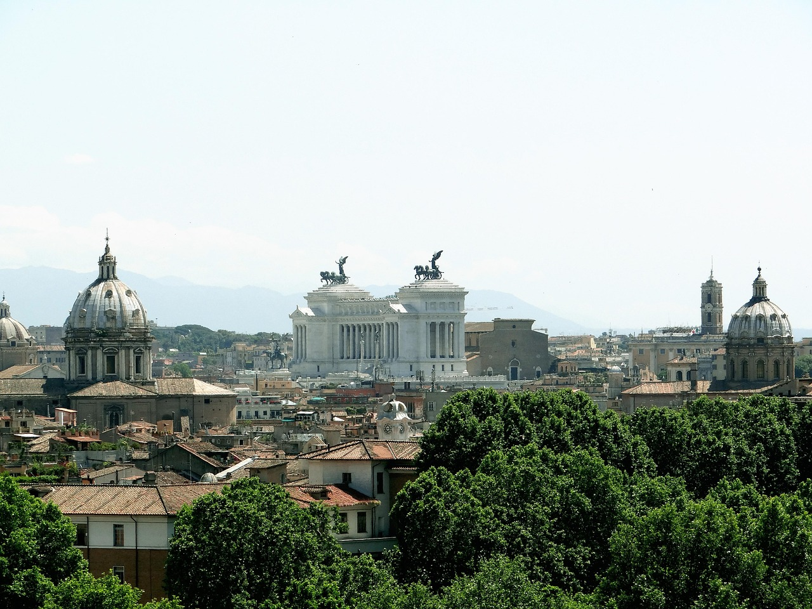

Raccolgo in questo sito alcuni dei monumenti della città di Roma di epoca imperiale. L'Impero romano fu la forma di governo instauratasi dopo la Repubblica romana. Questo periodo storico ha come anno di inizio generalmente il 27 a.C. Successivamente, nel 395 d.C., ci fu la divisione definitiva in Impero romano d'Occidente, con capitale Roma, e Impero romano d'Oriente, con capitale Costantinopoli. L'Impero romano d'Occidente cessò di esistere convenzionalmente nel 476 d.C. e questa è la data che viene generalmente considerata come la fine dell'epoca imperiale romana in Occidente. L'Impero romano d'Oriente, invece, sopravvisse per molti secoli e terminò la sua esistenza con la conquista di Costantinopoli da parte degli Ottomani nel 1453 d.C. Ogni pagina contiene alcune foto e una breve descrizione. Mi auguro che possiate apprezzare il contenuto di questo sito.
